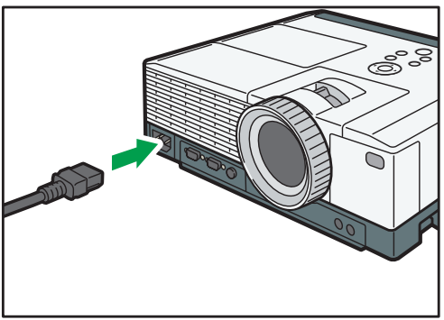

投影图像¶
重要信息
如果空气过滤器损坏，请进行更换。使用损坏的空气过滤器可能使灰尘进入投影仪内 部，导致投影仪停止工作或发生故障。
1. 将电源线组的插头插入投影仪镜头侧的 AC In 插座中。¶

2. 将电源插头插入电源插座。¶
当[默认设置 2]中的[电源打开方式]指定为[自动]时，投影仪将在此步骤中打开。转至步骤 4。

4. 打开连接到投影仪的设备。¶
投影仪自动检测输入信号并投影图像。
要投影视频播放器的图像，在视频播放器上按播放按钮。
要投影便携式电脑的屏幕，请切换计算机的图像输出。
5. 如果投影图像不是您所需投影的图像，请按[Input]按钮切换输入信号。¶
每次按[Input]按钮时，输入信号均会更改。